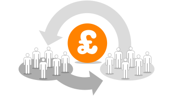
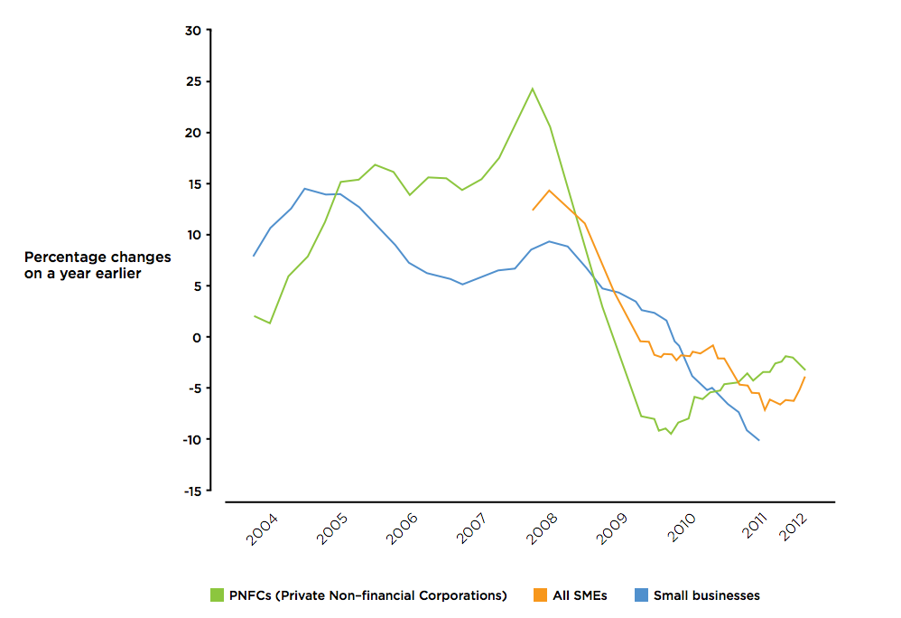

{% include odi_logo.html %}
{% include standard_title.html %}
Outline
- What is P2P lending?
- Show me the Money!
- Open data in finance?
What is peer-to-peer lending ... not?
Crowdfunding
Other P2P
Banks
Syndicated loans

Trends in Lending in the UK

| Lenders |
Recipients |
 |
 |
Is there a North-South divide?
All open data is good, but some are better.
How can banks benefit?
How can regulators benefit?
How can everyone benefit?
Questions?

Ulrich Atz · Open Data Institute
{% include odi_tech_team.html %}